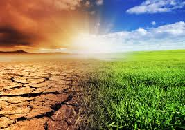

Deforestation
<-Back to About Page

What is Climate Change?
Climate change refers to long-term changes in the Earth's temperature, weather patterns, and climate
systems. While climate variations occur naturally, human activities have significantly accelerated
climate change over the past century through the release of greenhouse gases.
Major Causes of Climate Change
- Burning of fossil fuels such as coal, oil, and natural gas
- Deforestation and destruction of forests
- Industrial activities and emissions
- Agriculture and livestock farming
- Waste disposal and landfill gases
- Excessive energy consumption
What are Greenhouse Gases?
Greenhouse gases trap heat in the Earth's atmosphere, creating a warming effect known as the greenhouse
effect. While this process is natural and necessary for life, excessive greenhouse gases can lead to
global warming.
- Carbon Dioxide (CO₂)
- Methane (CH₄)
- Nitrous Oxide (N₂O)
- Water Vapor
- Fluorinated Gases
Effects of Climate Change
Climate change has widespread effects on the environment, ecosystems, and human societies around the
world.
- Rising global temperatures
- More frequent heat waves
- Changes in rainfall patterns
- Increased droughts and floods
- Stronger storms and hurricanes
- Threats to food and water supplies
Melting Glaciers and Rising Sea Levels
As global temperatures increase, glaciers and polar ice caps melt at a faster rate. This causes sea
levels to rise, threatening coastal communities and increasing the risk of flooding in many parts of the
world.
- Loss of polar ice
- Coastal flooding
- Erosion of shorelines
- Displacement of communities
Impact on Wildlife
Many plants and animals struggle to adapt to rapid climate changes. Some species are forced to migrate,
while others face extinction due to habitat loss and changing environmental conditions.
- Habitat destruction
- Changes in migration patterns
- Coral reef bleaching
- Increased risk of extinction
How Can We Reduce Climate Change?
- Use renewable energy sources such as solar and wind power.
- Reduce the use of fossil fuels.
- Plant more trees and protect forests.
- Conserve electricity and water.
- Use public transportation or cycle when possible.
- Reduce, reuse, and recycle waste.
- Support sustainable practices and technologies.
What Students Can Do
- Switch off lights and fans when not in use.
- Participate in tree-planting activities.
- Use reusable products instead of disposable ones.
- Spread awareness about climate change.
- Adopt eco-friendly habits in daily life.
Did You Know?
The last decade has been among the warmest periods ever recorded on Earth. Scientists around the world
continue to monitor climate changes and work toward solutions to reduce global warming.
Conclusion
Climate change is one of the most important challenges facing humanity today. By reducing greenhouse gas
emissions, protecting natural resources, and adopting sustainable lifestyles, we can help safeguard our
planet for future generations.